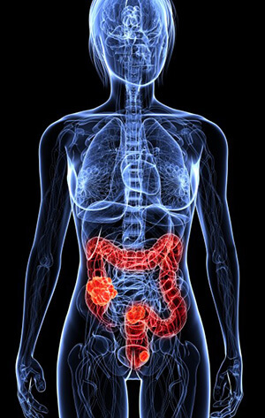

For years you have been hearing about the importance of maintaining a healthy diet to maintain better health and optimal weight. Study after study links poor diets that are highly refined and loaded with sugar, preservatives and saturated fats to nearly every chronic disease.
Yet so many still have not changed their diets or demanded higher quality foods from manufacturers. Low quality foods creates inflammation in the body which is directly linked to diabetes, heart disease, arthritis, cancer and numerous other major diseases.
Inflammation is a naturally occurring immune response in the body. Your body responds to the presence of injury or foreign invaders such as a virus or bacteria by sending chemicals and white blood cells to fight them off, helping your body heal and protect itself from illness. Naturally, this is a good thing that helps to keep you healthy.
When the body is out of balance your immune system steps into overdrive, causing chronic inflammation, weight gain, pain and disease. Chronic inflammation occurs even when the body’s immune system is activated but is not threatened by a foreign invader. Food is one of the primary causes of chronic inflammation – AND is the primary remedy.
You know already that highly refined and processed foods are very problematic for your health. Refined sugars and grains lack nutritional value and contribute to obesity, heart disease, type 2 diabetes, cancer, auto-immune diseases and many other major health problems. Saturated fats are another big contributor to disease.
What you may not be aware of is that there are also foods that are more likely to activate the immune system and cause inflammation. As your body reacts to these low-level allergens, you may experience hormonal imbalance, mood swings, joint pain, sinus and respiratory issues, headaches, digestive issues, fatigue, and weight gain. The symptoms develop slowly over time and, perhaps with the exception of weight gain, the cause is rarely associated with food. As a result, you may turn to medication or other medical testing and procedures in hopes of getting relief, yet if your diet remains unchanged, you will not find lasting relief.
The most common food sensitivities come from:
Everything that you bring into your body impacts it – for better or worse. Refined foods loaded with chemicals, pesticides and other toxins, medications, excess amounts of sugar, and other harmful things that you ingest or absorb into your body wreaks havoc on your digestive system, changing the PH balance, altering the bacterial composition, and damaging the protective lining in your stomach and intestinal tract.
The lining of your digestive tract is designed to protect your body and immune system from toxins and allergens in your digestive system. When damaged, food particles get through the barrier and activate your immune response. Your body begins attacking your food as if it was a foreign invader. This imbalanced immune response creates chronic inflammation in the body, leading to weight gain and other major health conditions.

Let food be your medicine.You CAN lose excess weight, reduce chronic pain, and reduce your risk of serious chronic illness ~ and even possibly reverse chronic illness ~ simply by making positive changes to your diet. Cut out inflammatory foods and add in more whole, healthy, anti-inflammatory foods that are nutrient dense, high in omega 3 fatty acids and antioxidants.
Adding these and other ANTI-inflammatory foods into your diet reduces oxidative stress, increases absorption of vital nutrients and triggers a number of reactions and critical body processes. These create a reduction in inflammation and begin to reverse the damage created by poor food choices.
As you continue to increase these foods in your diet and reduce or eliminate more harmful foods, you WILL lose weight and have LESS bloating, pain and swelling. If you have a chronic illness, you are likely to notice a reduction in symptoms and improved overall health.
Depending on your circumstances, a gradual shift in your diet may reduce the likelihood of backsliding, however choose based on your personal health needs and the recommendations of your healthcare professionals and nutritionists.
The good news is, although this is a change that some find daunting, you can still eat a wide variety of delicious foods. Fortunately, there are simple and delicious ways to begin introducing new, healthy foods into your diet.
When made properly, a green smoothie is an ideal meal replacement that provides you with lots of valuable nutrients and helps reduce inflammation in your body.
Anti-inflammatory foods include fruits, leafy green, nuts, seeds and other healthy ingredients that also are all primary ingredients in green smoothies! Adding green smoothies into your diet is simple and fun, not to mention when made correctly, they taste like dessert! There are numerous recipes and combinations that keep things interesting and tasty. Even replacing just one meal a day can make a massive difference in your health, one you will SEE and FEEL within only a few days.
Watch the Free Presentation below to Learn more about the health benefits of green smoothies as well as a super simple way to get started losing weight and improving your health TODAY.